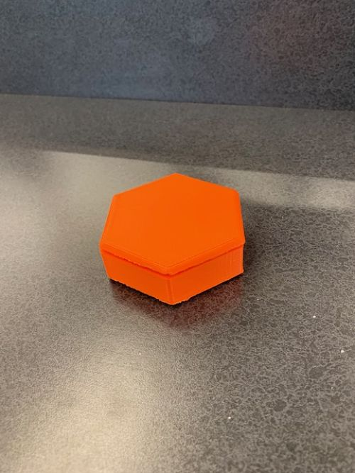
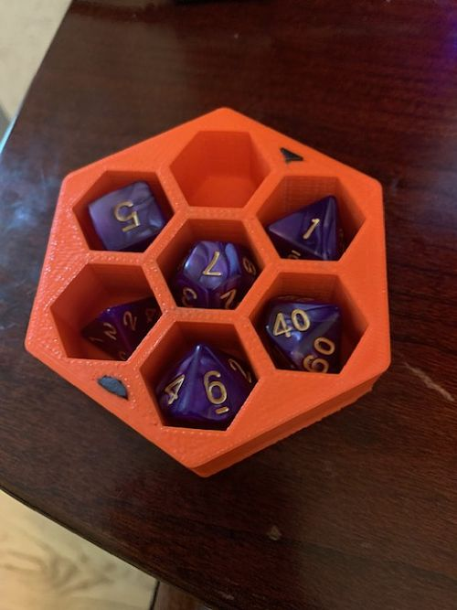
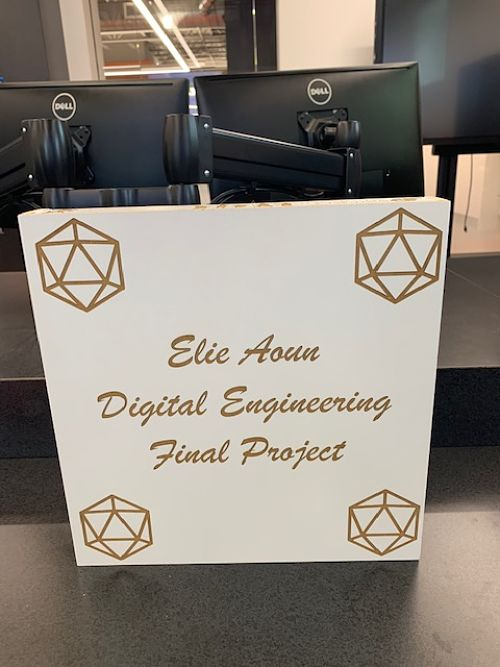
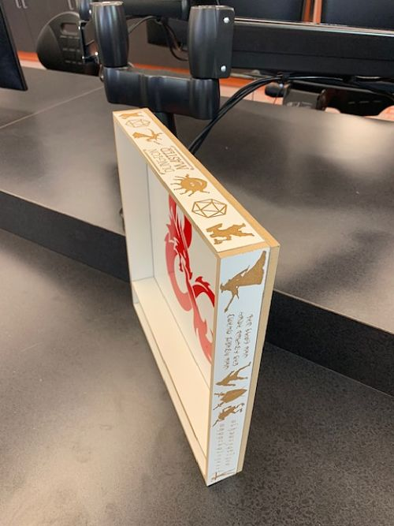
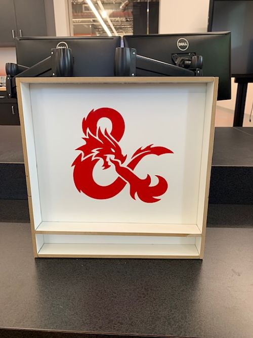
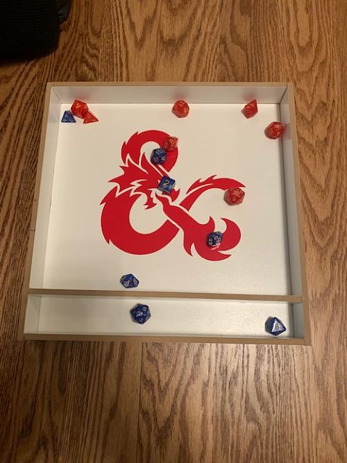

Final Project
For the final project, we had to create something of our choice using at least four different pieces of equipment/processes that we
learned in the course of the class. Being the total nerd I am, I decided to make something based on Dungeons and Dragons. Because the
game uses lots of dice, I created a dice holder to carry dice and a dice tray to rolling dice while playing. To create the dice holder,
I used Fusion 360 (CAD) to make the design of the holder and 3D printed it once it was finished. For the dice tray, I used woodworking
to cut all the necessary pieces in the correct size, laser engraving to design the sides and bottom, and vinyl cutting to create the
giant sticker logo in the center. This means I used five processes in total. It took me three full class periods to complete plus about
two extra hours spent in the WIC on my own time. I used 40 speed and 100 power on the laser engraver when engraving the wood. I learned
that it takes a lot of time and effort to make projects that require many different processes to complete. I also learned that it's really
fun to make projects based on something that I really enjoy and am passionate about. I'm really happy with the way
they turned out and I will certainly be using these accessories the next time I play Dungeons and Dragons with my friends!
 Image 1: A picture of the dice holder and its cap.
Image 1: A picture of the dice holder and its cap.
 Image 2: A picture of the dice holder with its cap on.
 Image 3: A picture of the dice holder with dice in it.
 Image 4: A picture of the bottom of the dice tray.
 Image 5: A picture of one side of the dice tray.
 Image 6: A picture of the inside/center of the dice tray.
 Image 7: A picture of the dice tray with dice in it.
Back to index